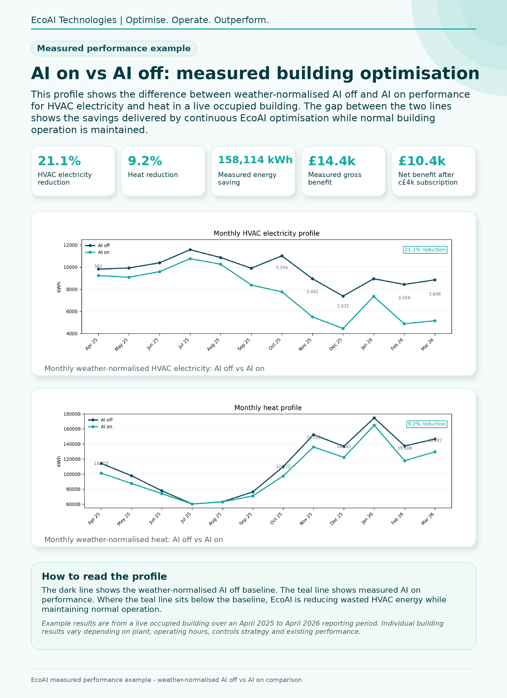

01
Works with existing systems
myCoreAI connects to existing BMS infrastructure and optimises selected HVAC setpoints. The building’s own controllers, safety functions and local control logic remain in place.
EcoAI delivers myCoreAI as an optimisation layer for existing buildings. It connects to the current BMS, learns how the building responds, and adjusts selected HVAC setpoints every 15 minutes to reduce wasted energy while staying within agreed comfort and operational limits.
The existing BMS remains in place and continues to control the building. EcoAI helps owners, universities and operators reduce heating, cooling and ventilation energy without rip-and-replace, major disruption or reliance on manual tuning.
Choose the route that matches your priority, then move straight into the detail.
Proof preview
Weather-normalised AI off vs AI on reporting shows the measurable impact of continuous EcoAI optimisation in live occupied buildings.

Always-on optimisation
Yes — if they could optimise your building every 15 minutes, 24 hours a day, 365 days a year.
A skilled engineer can tune a building, improve performance and identify wasted energy.
But buildings do not stand still. Weather changes. Occupancy changes. System behaviour changes. Comfort demand changes.
Doing that manually, around the clock, would be impractical — and extremely costly.
EcoAI supports the engineer by adding a 24/7 optimisation layer to your existing BMS. It helps reduce wasted HVAC energy while maintaining comfort and using the infrastructure already in place — with verified savings expected to exceed the annual service cost.
How delivery works
EcoAI provides a practical implementation model designed for existing buildings, using live BMS data, predictive modelling and selected setpoint optimisation to deliver savings while keeping the existing control system in place.
myCoreAI does not replace the BMS, FM team or controls contractor. It works as a continuous optimisation layer above the existing control system.
01
myCoreAI connects to existing BMS infrastructure and optimises selected HVAC setpoints. The building’s own controllers, safety functions and local control logic remain in place.
02
A building-specific digital model helps predict how the building will respond to weather, occupancy and control changes, allowing myCoreAI to optimise every 15 minutes.
03
Structured reporting shows energy, cost, carbon and comfort outcomes clearly for estates, finance, sustainability and leadership teams.
Deeper commercial detail
A clearer view of the commercial case for owners and operators — from no-CapEx adoption and avoided infrastructure change to verified savings, stronger NOI and portfolio-scale rollout.
Higher education preview
From laboratories and teaching spaces to residences, EcoAI supports varied campus demand without creating additional manual workload.
Next step
Receive a data-led assessment of likely HVAC savings opportunities for your building or portfolio, with a clear route to implementation.